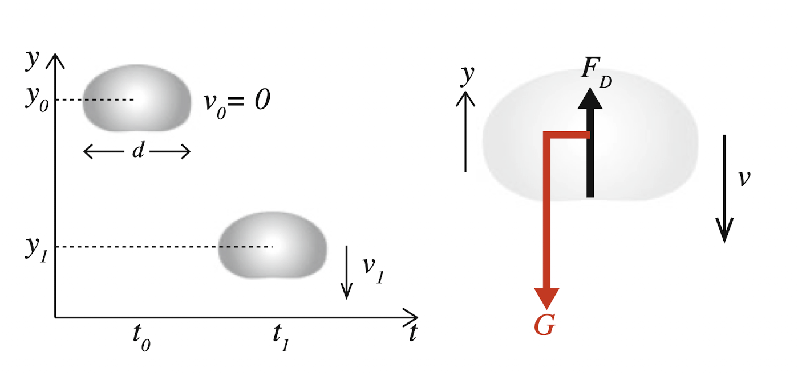
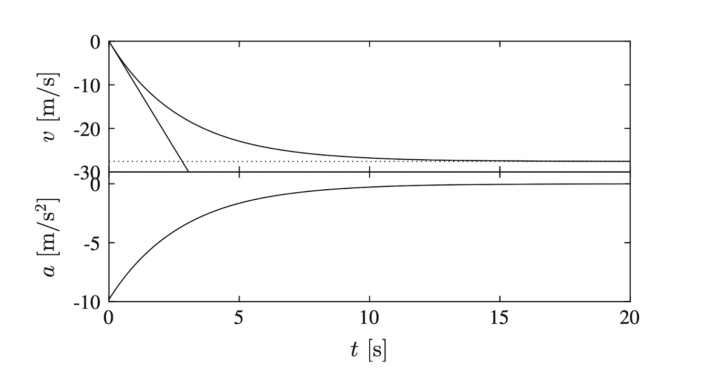

Anexo: Mecánica elemental usando Python#
Descripción general#
Este anexo introduce el uso básico de Python en el contexto de la física mecánica elemental, utilizando cuadernos Jupyter ejecutados en Google Colab. Su propósito es entregar a los estudiantes una base práctica para realizar cálculos, definir funciones simples y construir gráficos útiles para apoyar el estudio de la cinemática, la dinámica y la energía.
El enfoque de este anexo está inspirado en una serie de notebooks introductorios, organizados en torno a cuatro ejes:
uso de Python como calculadora
scripts y funciones
gráficos de datos
gráficos de funciones
Objetivo de aprendizaje#
Al finalizar este anexo, el estudiante será capaz de:
usar Google Colab para abrir, editar y ejecutar notebooks
escribir instrucciones básicas en Python
utilizar variables, operaciones aritméticas y funciones matemáticas
definir funciones simples para problemas de mecánica
generar gráficos básicos con Python
interpretar visualmente relaciones físicas a partir de datos y funciones.
1. ¿Qué es Google Colab?#
Google Colab es un entorno en la nube que permite trabajar con notebooks tipo Jupyter sin instalar Python en el computador. En Colab se puede:
escribir código en celdas
agregar texto explicativo en formato Markdown
ejecutar cálculos paso a paso
insertar gráficos y resultados en el mismo documento
Operaciones básicas en Colab#
En un notebook existen dos tipos de celdas principales:
celdas de código, para ejecutar Python
celdas de texto, para escribir explicaciones, fórmulas y comentarios.
Atajos útiles#
Shift + Enter: ejecuta la celda actual y pasa a la siguiente
Ctrl + Enter: ejecuta la celda actual
Alt + Enter: ejecuta la celda y crea una nueva debajo
Disponibilidad#
Google Collab esta disponible para todos los estudiantes de la UTEM a través de su correo personal, ingresando a Drive como se muestra en la siguiente imagen.
{kind=link}
2. Python como calculadora científica#
Python puede utilizarse como una calculadora para operaciones frecuentes en mecánica.
Operaciones básicas#
2 + 3
10 - 4
6 * 7
8 / 2
2 ** 3
Uso de variables#
m = 5
g = 9.81
peso = m * g
print(peso)
Interpretación física#
Este tipo de instrucciones permite calcular magnitudes simples como:
peso
rapidez
energía cinética
trabajo mecánico
período
frecuencia
3. Uso de la librería math#
Para muchas aplicaciones en mecánica se necesitan funciones matemáticas especiales. Python incluye la librería math.
import math
Ejemplos básicos#
math.sqrt(16)
math.sin(math.pi / 2)
math.cos(0)
math.pi
Aplicación en mecánica#
import math
v0 = 20
theta = math.radians(45)
vx0 = v0 * math.cos(theta)
vy0 = v0 * math.sin(theta)
vx0, vy0
Esto permite descomponer vectores y trabajar correctamente con ángulos en radianes.
4. Scripts simples en Python#
Un script es una secuencia ordenada de instrucciones que Python ejecuta paso a paso.
Ejemplo: cálculo del peso de varios cuerpos#
g = 9.81
m1 = 2
m2 = 5
m3 = 10
p1 = m1 * g
p2 = m2 * g
p3 = m3 * g
print(p1)
print(p2)
print(p3)
Utilidad en mecánica#
Los scripts son útiles para:
automatizar cálculos repetitivos;
comparar resultados;
evitar errores aritméticos;
resolver rápidamente ejercicios con varios casos.
5. Funciones en Python#
Las funciones permiten reutilizar cálculos y organizar mejor el trabajo.
Ejemplo: función para calcular energía cinética#
def energia_cinetica(m, v):
return 0.5 * m * v**2
Uso de la función#
energia_cinetica(2, 3)
energia_cinetica(5, 10)
Ejemplo: función para el peso#
def peso(m, g=9.81):
return m * g
Importancia en física#
Las funciones son especialmente útiles para representar fórmulas físicas de manera directa y clara.
6. Arreglos y datos con numpy#
Cuando se trabaja con muchos valores, conviene usar numpy.
import numpy as np
Ejemplo: tiempos igualmente espaciados#
t = np.linspace(0, 5, 6)
t
Resultado esperado:
array([0., 1., 2., 3., 4., 5.])
Aplicación en cinemática#
x0 = 0
v0 = 4
a = 2
t = np.linspace(0, 5, 100)
x = x0 + v0*t + 0.5*a*t**2
Esto permite calcular la posición para muchos instantes al mismo tiempo.
7. Gráficos con matplotlib#
Para visualizar funciones y datos en mecánica se usa frecuentemente matplotlib.
import matplotlib.pyplot as plt
Ejemplo: posición en función del tiempo#
import numpy as np
import matplotlib.pyplot as plt
x0 = 0
v0 = 4
a = 2
t = np.linspace(0, 5, 100)
x = x0 + v0*t + 0.5*a*t**2
plt.plot(t, x)
plt.xlabel("Tiempo [s]")
plt.ylabel("Posición [m]")
plt.title("Movimiento rectilíneo uniformemente acelerado")
plt.grid(True)
plt.show()
Interpretación#
Este gráfico permite visualizar cómo cambia la posición con el tiempo en un MRUA.
8. Gráficos de conjuntos de datos#
Python también puede graficar datos experimentales o tablas de valores.
Ejemplo#
tiempo = [0, 1, 2, 3, 4]
velocidad = [0, 2, 4, 6, 8]
plt.plot(tiempo, velocidad, marker="o")
plt.xlabel("Tiempo [s]")
plt.ylabel("Velocidad [m/s]")
plt.title("Velocidad en función del tiempo")
plt.grid(True)
plt.show()
Utilidad en el curso#
Esto sirve para:
graficar resultados experimentales;
comparar teoría y datos;
identificar tendencias;
interpretar pendientes y áreas.
9. Gráficos de funciones en mecánica#
Un uso muy valioso de Python es graficar funciones físicas.
Ejemplo: tiro parabólico#
import numpy as np
import matplotlib.pyplot as plt
import math
g = 9.81
v0 = 20
theta = math.radians(45)
t = np.linspace(0, 3, 200)
x = v0 * math.cos(theta) * t
y = v0 * math.sin(theta) * t - 0.5 * g * t**2
plt.plot(x, y)
plt.xlabel("x [m]")
plt.ylabel("y [m]")
plt.title("Trayectoria de un proyectil")
plt.grid(True)
plt.show()
10. Ejercicio : Gotas de Lluvia en Caída — Fuerza Viscosa y Velocidad Terminal#
En este ejercicio modelamos la caída de una gota de lluvia pequeña bajo la acción simultánea de la gravedad y la resistencia viscosa del aire. El objetivo es encontrar la velocidad como función del tiempo mediante integración numérica y comparar con la solución analítica exacta.[1]
Marco Teórico#
Diagrama de cuerpo libre: la gota solo interactúa con el aire circundante (fuerza de arrastre \(F_D\)) y con el campo gravitacional terrestre (\(G\)). Describimos su posición vertical \(y(t)\) con el eje \(+y\) apuntando hacia arriba.
Para velocidades bajas (número de Reynolds \(Re \ll 1\)), la fuerza de arrastre es proporcional a la velocidad — es la ley de Stokes:
donde la constante viscosa vale \(k_v = 6\pi\eta R\), con \(\eta\) la viscosidad dinámica del aire y \(R\) el radio de la gota.
Aplicando la Segunda Ley de Newton sobre el eje \(y\):
lo que conduce a la ecuación diferencial:
Velocidad terminal: cuando la aceleración se anula, la gota alcanza una velocidad estacionaria \(v_T\):
Solución analítica (separación de variables a partir de la ec. 5.1.3):
{kind=link}

Figura 41 Esquema de la gota cayendo con eje \(y\), posiciones \(y0/y1\), velocidades \(v0=0\), \(v_1\), además de diagrama de cuerpo libre con \(F_D\) hacia arriba y \(G\) hacia abajo.#
Código#
Pueden cortar y pegar este código en una celda de Google Collab.
# Importación de librerías a usar
import numpy as np
import matplotlib.pyplot as plt
# Parámetros físicos en S.I.
g = 9.81 # aceleración de gravedad [m/s²]
rho_w = 1000.0 # densidad del agua [kg/m³]
eta = 1.82e-5 # viscosidad dinámica del aire [N·s/m²]
d = 1e-3 # diámetro de la gota de lluvia [m]
R = d / 2 # radio de la gota de lluvia [m]
# Cantidades
V = (4 / 3) * np.pi * R**3 # volumen de la esfera [m³]
m = rho_w * V # masa de la gota [kg]
kv = 6 * np.pi * eta * R # coeficiente de Stokes [N·s/m]
vT = m * g / kv # velocidad terminal [m/s]
print(f"Mass m = {m:.3e} kg")
print(f"Stokes coeff kv = {kv:.3e} N·s/m")
print(f"Terminal vel vT = {vT:.2f} m/s")
# Método de Euler de integración numérica
time = 20.0 # tiempo total de simulación [s]
dt = 1e-3 # intervalos [s]
n = int(time / dt)
v = np.zeros(n)
a = np.zeros(n)
t = np.zeros(n)
v[0] = 0.0 # inicio
for i in range(n - 1):
a[i] = -g - (kv / m) * v[i]
v[i + 1] = v[i] + a[i] * dt
t[i + 1] = t[i] + dt
# soluciones de referencia
t_plot = np.linspace(0, time, 500)
v_exact = vT * (np.exp(-g * t_plot / vT) - 1) # solución analítica
v_no_drag = -g * t_plot # caída libre (sin resistencia del aire)
# Plot /gráfico
fig, axes = plt.subplots(1, 2, figsize=(12, 4))
# Velocidad
ax = axes[0]
ax.plot(t, v, "r-", lw=1.5, label="Euler (numérico)")
ax.plot(t_plot, v_exact,"b--", lw=2, label="Analítico")
ax.plot(t_plot, v_no_drag, "g:", lw=1.5, label="Sin arrastre")
ax.axhline(-vT, color="k", linestyle="dotted", label=f"$-v_T = -{vT:.1f}$ m/s")
ax.set_xlabel("t [s]")
ax.set_ylabel("v [m/s]")
ax.set_title("Velocidad de la gota de lluvia")
ax.legend(fontsize=8)
ax.grid(True, alpha=0.3)
# Aceleración
ax2 = axes[1]
ax2.plot(t[:-1], a[:-1], "r-", lw=1.5)
ax2.axhline(0, color="k", linestyle="--", lw=1)
ax2.set_xlabel("t [s]")
ax2.set_ylabel("a [m/s²]")
ax2.set_title("Aceleración de la gota de lluvia")
ax2.grid(True, alpha=0.3)
plt.tight_layout()
plt.savefig("raindrop_velocity.png", dpi=150)
plt.show()
Resultados#
Al ejecutar con \(d = 1\ \text{mm}\), los valores calculados son:
Parámetro |
Valor |
|---|---|
Masa \(m\) |
\(5.24 \times 10^{-7}\ \text{kg}\) |
Coeficiente de Stokes \(k_v\) |
\(1.72 \times 10^{-7}\ {N \cdotp s/m}\) |
Velocidad terminal \(v_T\) |
\(\approx 29.8\ \text{m/s}\) |
{kind=link}

Figura 42 Gráfica con la curva numérica de \(v(t)\) y \(a(t)\) de la caida.#
Verificación: Límites de la solución#
Condición |
Predicción |
Comportamiento observado |
|---|---|---|
\(t \to 0\) |
\(a \to -g\) |
Aceleración inicial \(= -9.81\ \text{m/s}^2\) ✓ |
\(t \to \infty\) |
\(v \to -v_T\) |
Velocidad se estabiliza en \(-v_T\) ✓ |
\(k_v \to 0\) |
\(v(t) \to -gt\) |
Coincide con caída libre ✓ |
\(v_0 = -2v_T\) |
\(v \to -v_T\) desde abajo |
La gota desacelera hacia \(-v_T\) ✓ |
El tercer límite valida el código: cuando \(k_v = 0\) la solución numérica debe
recuperar \(v(t) = -gt\), lo que se puede comprobar ejecutando kv = 0 en el programa.
Síntesis Física#
La resistencia viscosa convierte el movimiento uniformemente acelerado de la caída libre en un proceso con saturación: la gota nunca supera \(v_T\), independientemente de la altura de caída. Este mecanismo es crucial para la vida — sin él, una gota de \(1\ \text{mm}\) que cayera desde \(2\ \text{km}\) de altitud impactaría a más de \(200\ \text{m/s}\) en lugar de los \(\approx 9\ \text{m/s}\) observados. La solución de Euler es suficiente aquí porque la fuerza no depende de la posición, solo de la velocidad, lo que mantiene estable el esquema para pasos de tiempo pequeños.[1]
11. Álgebra computacional con SymPy#
Hasta ahora hemos trabajado con cálculo numérico: Python entrega valores aproximados (por ejemplo, \(\sqrt{2} \approx 1.4142\)). La librería SymPy permite hacer cálculo simbólico, es decir, manipular expresiones matemáticas de forma exacta, tal como se haría con lápiz y papel.
import sympy as sp
Notación básica y símbolos#
Antes de operar con variables matemáticas hay que declararlas como símbolos.
import sympy as sp
x, y, t = sp.symbols("x y t")
m, g, v0 = sp.symbols("m g v0", positive=True)
Una vez declarados, los símbolos se combinan en expresiones algebraicas:
expr = m * g * x + sp.Rational(1, 2) * m * v0**2
expr
sp.Rational(1, 2) representa exactamente \(\tfrac{1}{2}\), a diferencia de 0.5 que es un decimal aproximado.
Operaciones simbólicas frecuentes#
sp.expand((x + y)**3) # expandir
sp.factor(x**2 - y**2) # factorizar
sp.simplify(sp.sin(x)**2 + sp.cos(x)**2) # simplificar
sp.solve(x**2 - 4, x) # raíces de una ecuación
Derivadas e integrales#
SymPy se integra muy bien con la mecánica porque permite derivar e integrar de forma exacta.
# Posición de un MRUA: x(t) = x0 + v0 t + (1/2) a t^2
x0, v0, a = sp.symbols("x0 v0 a")
x_t = x0 + v0*t + sp.Rational(1, 2)*a*t**2
v_t = sp.diff(x_t, t) # velocidad: derivada de la posición
a_t = sp.diff(x_t, t, 2) # aceleración: segunda derivada
v_t, a_t
# Trabajo de una fuerza variable F(x) = -k x entre 0 y L
k, L = sp.symbols("k L", positive=True)
F = -k*x
W = sp.integrate(F, (x, 0, L))
W
Resolver sistemas de ecuaciones#
Una de las aplicaciones más útiles en mecánica es resolver sistemas de ecuaciones que aparecen al aplicar las leyes de Newton o al estudiar colisiones.
Ejemplo: sistema lineal#
Supongamos dos bloques conectados por una cuerda sobre una polea ideal, con masas \(m_1\) y \(m_2\). Las ecuaciones de Newton dan:
import sympy as sp
a, T = sp.symbols("a T")
m1, m2, g = sp.symbols("m1 m2 g", positive=True)
eq1 = sp.Eq(m1*a, T - m1*g)
eq2 = sp.Eq(m2*a, m2*g - T)
sol = sp.solve([eq1, eq2], [a, T])
sol
El resultado es la solución analítica para la aceleración del sistema y la tensión de la cuerda, expresada en función de \(m_1\), \(m_2\) y \(g\).
Ejemplo: ecuación no lineal#
# Tiempo de vuelo de un proyectil lanzado desde el suelo
v0, theta, gsym, ts = sp.symbols("v0 theta g t", positive=True)
y = v0*sp.sin(theta)*ts - sp.Rational(1, 2)*gsym*ts**2
sp.solve(sp.Eq(y, 0), ts)
Sustitución y evaluación numérica#
Una vez obtenida la solución simbólica, podemos reemplazar valores y obtener un número concreto.
sol_a = sol[a] # expresión simbólica
sol_a.subs({m1: 2, m2: 3, g: 9.81}) # evaluación exacta
float(sol_a.subs({m1: 2, m2: 3, g: 9.81})) # como número flotante
Ejemplo: oscilador armónico simple#
Como ejemplo más completo de álgebra computacional, resolvamos simbólicamente la ecuación diferencial del oscilador armónico simple,
con condiciones iniciales \(x(0) = A\) y \(\dot{x}(0) = 0\).
import sympy as sp
t = sp.symbols("t")
m, k, A = sp.symbols("m k A", positive=True)
x = sp.Function("x")
ode = sp.Eq(m*x(t).diff(t, 2) + k*x(t), 0)
sol = sp.dsolve(
ode,
x(t),
ics={x(0): A, x(t).diff(t).subs(t, 0): 0},
)
sol
SymPy devuelve la solución exacta \(x(t) = A\cos(\omega t)\) con \(\omega = \sqrt{k/m}\), sin necesidad de integrar a mano.
¿Cuándo usar SymPy y cuándo NumPy?#
SymPy— cuando se busca una expresión analítica exacta: derivar, integrar, factorizar, resolver ecuaciones literales, verificar despejes hechos a mano.NumPy— cuando se necesitan valores numéricos para muchos puntos, simulaciones o gráficos.
A menudo conviene combinar ambos: obtener una fórmula con SymPy y luego graficarla numéricamente con NumPy y matplotlib. Para esto, sp.lambdify convierte una expresión simbólica en una función numérica:
expr = v0*sp.cos(theta)*t # alcance horizontal x(t)
f = sp.lambdify((t, v0, theta), expr, "numpy")
f(0.5, 20, 0.785)
12. Buenas prácticas para estudiantes#
Cuando trabajes en Colab, se recomienda:
comentar el código
usar nombres de variables claros
incluir unidades en los gráficos
probar primero ejemplos simples
revisar si los resultados tienen sentido físico
separar el cálculo, el gráfico y la interpretación.
13. Aplicaciones sugeridas al curso#
Este anexo puede usarse para apoyar contenidos como:
conversiones de unidades
vectores y descomposición
cinemática 1D
tiro parabólico
movimiento circular
leyes de Newton
energía mecánica
momentum lineal
Conceptos clave#
Google Colab
notebook
celda de código
celda Markdown
variable
script
función
mathnumpymatplotlibSymPycálculo simbólico
sistema de ecuaciones
gráfico
visualización de datos